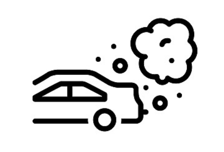
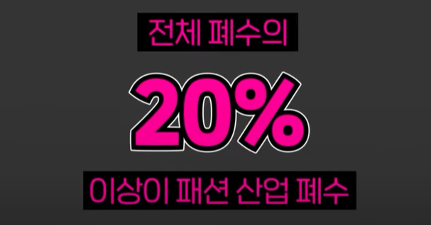

어서오세요!
당신이 이곳에 있다는 것은 지구를 지키고싶다는 것이겠죠...
그럼 시작할까요?

지구는 지금 위기에 처해있다는 것은 알고 계실 겁니다.

자동차 매연

공장의 매연

생활 폐수
매년 버려지는 폐기물양은 약 20억톤
이 쓰레기들은 바다로 흘러가서 해양 생태계를 어지럽히는 주범이 됩니다...

플라스틱 섬이라고 들어보셨는지요...
이 섬의 대부분이 플라스틱 용기라는 것은
이미 익히 들어 알고 있을 겁니다...
하
지
만!
But
However Though Althougheven though by the way!
플라스틱 용기 못지 않게
의류 폐기물도 많은 비중을 차지한다는 것을 알고 계신가요?
전체 폐기물 중 정확한 통계는 없지만,

70억 인구가 연간
17.5kg을 배출한다고 생각하면
가볍게 생각할 문제는 아닐것입니다.
플라스틱 용기
에 비해
의류 폐기물은 그
심각성
이 많이 알려져 있지 않습니다.
당장 당신과 당신 주변만 봐도 얼마나
인지도
가 낮은지 알 수 있죠
대부분의 의류는
폴리에스테르(플라스틱 합성 섬유)
를 함유하고 있습니다.
이러한 플라스틱 섬유를 가진 물체가 1인당 연간 폐기량이 17.5kg인 점을 감안하면
문제가 생기지 않는 것이 신기한 일입니다.
이것은 바로
"미세플라스틱"으로.
해양생태계의
생물들의
삶의 터전을 위협하는 평소에 들어왔던
그것이 맞습니다.
하지만 그렇다고 해도 이것은 플라스틱 용기만 못하죠
그렇다면 왜 의류 폐기물이 심각한 문제로 조명을 받을까요?
재활용 기술의 부재 때문입니다.
아시다시피 플라스틱 용기는 비교적 재활용 시스템이 활성화 되어있습니다.
하지만 의류는 아직까지 실용적이고 경제적인 기술이 개발되지 않아, 의류 재활용이 많이 이루어지지 않습니다.
또한 생분해에 소요되는 시간은 무려 "200년"
"200년"
옷을 만들고 폐기하는데 배출되는 CO2는 전체 산업의 10%를 차지합니다...
또한 청바지 한벌 만드는데는 물 7000L가 사용되며,
이러한 사용량 덕택에 전체 폐수량중 20%를 차지합니다...

이러한 심각성에 대해 우리가 할 수 있는 것은
적어도 책임감을 가지고 옷을 소비하는 것이다.
라는 진부하고 지켜지지 않는 말은 해답이 되지 못합니다.
우리는 그 해답을 "이것"에서 찾았습니다!